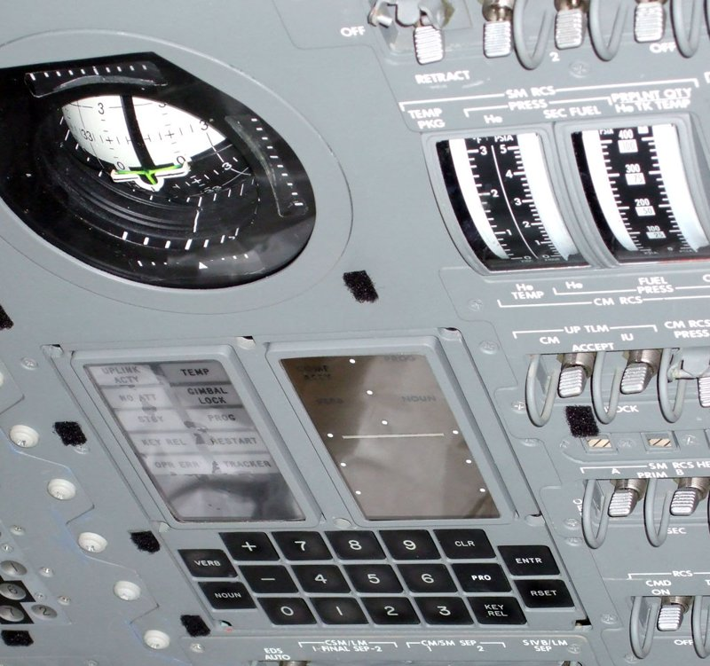

Chapitre 6 – Informatique embarquée
Systèmes embarqués et voiture autonome
1 Cours : les systèmes embarqués
Un système embarqué est un système à la fois électronique et informatique, intégré à un objet pour accomplir une tâche précise. L’un des plus célèbres est l’Apollo Guidance Computer, le système de guidage de la mission Apollo qui permit aux hommes de marcher sur la Lune en juillet 1969. L’astronaute-pilote l’utilisait en temps réel pour recueillir et fournir des informations de vol, et pour le contrôle automatique des fonctions de navigation du vaisseau.

Aujourd’hui, les systèmes embarqués se sont développés dans des secteurs très variés : aéronautique, électroménager, matériel médical, téléphonie mobile, robotique industrielle, jeux vidéo, automobile… On en trouve quasiment partout : porte automatique, robot aspirateur, appareil photo numérique, pilote automatique, thermostat, etc.
Une même architecture
Tous ces systèmes reposent sur un modèle commun, composé de capteurs, d’un système informatique et d’actionneurs, et pour certains d’une interface.
- Environnementle monde physique
- Capteursrecueillent des informations
- Système informatiquetraite les informations
- Actionneursagissent sur le monde physique
- Les capteurs recueillent de l’information sur le monde physique : photosites d’un appareil photo, altimètre d’un avion, GPS d’une voiture, laser d’un robot aspirateur, détecteur radar d’une porte automatique, thermomètre…
- Ces informations sont traitées par une machine dotée d’une partie matérielle et d’une partie logicielle. Suivant les informations traitées, elle active des actionneurs.
- Les actionneurs permettent au système d’agir sur le monde physique. Si la luminosité est trop faible, l’appareil photo active le flash ; si le radar détecte un mouvement, la porte automatique s’ouvre ; si la température baisse, le thermostat demande à la chaudière de chauffer.
- Certains systèmes possèdent une interface : le moyen de communication entre l’utilisateur et la machine (tableau de bord d’une voiture, boutons du régulateur de vitesse…).
Act. La voiture autonome
Consigne : regarde la vidéo ci-dessous, puis réponds aux questions 1 et 2. Pour la question 3 (débat) et les suivantes, appuie-toi sur les documents.
Cliquer ici si la vidéo ne s’affiche pas.
Quels sont les capteurs de la voiture autonome ?
Donne trois exemples d’actionneurs de la voiture autonome et dans quelle situation ils peuvent être activés.
Doc. 1 Les niveaux d’autonomie d’une voiture
Avant d’arriver à ce que l’on appelle la voiture autonome (au sens strict, « sans intervention du conducteur »), il existe des niveaux d’autonomie à franchir. Ils sont définis par la norme internationale SAE (de 0 à 5).
- Niveau 0Conduite manuelle : toutes les tâches sont réalisées par l’homme (le véhicule peut seulement alerter).
- Niveau 1Conduite assistée : la gestion du contrôle de la voiture est partagée (par exemple, un régulateur de vitesse adaptatif ou un maintien dans la voie).
- Niveau 2Conduite partiellement automatisée : la voiture gère à la fois la vitesse et la direction, mais le conducteur surveille en permanence et doit pouvoir reprendre la main immédiatement.
- Niveau 3Conduite conditionnellement automatisée : dans des conditions précises (par exemple trafic dense sur autoroute), la voiture surveille elle-même son environnement. Le conducteur peut détourner son attention, mais doit reprendre le contrôle si le système le demande.
- Niveau 4Conduite hautement automatisée : la voiture gère tout dans un cadre défini (zone, type de route) et peut se mettre en sécurité seule en cas de défaillance. Aucune reprise en main n’est exigée dans ce cadre.
- Niveau 5Conduite totalement automatisée : la voiture est autonome sur tout type de route, dans toutes les conditions.
Au sens strict, « voiture autonome » signifie sans intervention du conducteur. Pour cela, elle doit pouvoir communiquer avec son environnement et devenir un terminal connecté (au même titre qu’un smartphone ou une tablette numérique).
- Niveau 4 : aux États-Unis, la société Waymo fait circuler des robotaxis sans conducteur à bord. En mars 2026, elle annonçait environ 500 000 courses payantes par semaine dans une dizaine de villes (Phoenix, San Francisco, Los Angeles, Dallas, Houston…).
- Niveau 3 : Mercedes-Benz propose son système Drive Pilot, homologué en Allemagne jusqu’à 95 km/h sur autoroute, en trafic fluide et sous certaines conditions. Si le conducteur ne reprend pas la main quand le système le demande, la voiture freine jusqu’à l’arrêt et allume les feux de détresse.
- Niveau 2 : la plupart des voitures vendues aujourd’hui proposent des aides à la conduite (régulateur adaptatif, maintien dans la voie) : le conducteur reste entièrement responsable.
Sources : InsideEVs (mars 2026) ; Mercedes-Benz, Drive Pilot 95 km/h (décembre 2024). Texte du document réécrit à partir du manuel.
Doc. 2 Les interfaces homme-machine
Les interfaces homme-machine (IHM) des voitures évoluent beaucoup : les constructeurs investissent dans le futur tableau de bord, qui devient très sophistiqué. À mesure que la conduite s’automatise, le conducteur délègue des fonctions au système, et l’interface doit :
- informer le conducteur de ce que fait la voiture et des conditions de circulation ;
- l’avertir lorsque la limite de l’automatisation est atteinte, pour qu’il reprenne le contrôle du véhicule à temps ;
- proposer de nouvelles activités à bord (lire des courriels, regarder un film, travailler) lorsque le véhicule conduit seul.
Les dispositifs d’interaction évoluent aussi : écrans tactiles, reconnaissance vocale, commandes gestuelles. Les boutons et manettes classiques sont de plus en plus souvent remplacés, mais ces nouvelles interfaces doivent atteindre une fiabilité quasi absolue : un conducteur ne doit pas quitter la route des yeux pour régler le chauffage.
Texte réécrit à partir du manuel.
Doc. 3 Pirater une voiture autonome
En 2017, des chercheurs ont montré que de petits autocollants collés sur un panneau « stop » suffisaient à tromper le système de reconnaissance d’images d’une voiture autonome, qui lisait alors un panneau de limitation de vitesse. Ce type d’attaque s’appelle une attaque adverse : on modifie légèrement l’environnement pour tromper l’intelligence artificielle du véhicule.
À lire : Le Monde – De petits autocollants suffisent pour pirater des voitures autonomes
Cet article est susceptible d’être réservé aux abonnés.
Doc. 4 Vidéo complémentaire
Regarde la vidéo suivante, puis utilise-la pour répondre aux questions.
? Questions (suite)
Une voiture autonome doit-elle obligatoirement posséder une interface ? Appuie tes arguments en exploitant les documents.
Quel niveau d’autonomie correspond à (a) un régulateur de vitesse adaptatif, (b) le Drive Pilot de Mercedes, (c) un robotaxi Waymo ? Dans chaque cas, le « conducteur » peut-il lire un livre pendant le trajet ? Justifie.
Pourquoi une attaque comme celle des autocollants est-elle particulièrement grave pour une voiture autonome ? Propose une solution pour s’en protéger.
2 Cours : les contraintes de l’informatique embarquée
En informatique embarquée, il existe des contraintes différentes de celles de l’informatique personnelle :
- La criticité : une sûreté de fonctionnement qui demande aux systèmes dits critiques de fournir des résultats exacts et pertinents.
- La réactivité : ces systèmes interagissent avec leur environnement, ce qui impose des temps de réponse précis. L’informatique embarquée repose souvent sur un système temps réel.
- L’autonomie : les systèmes embarqués doivent très souvent remplir leur mission pendant de longues périodes sans intervention humaine.
- La robustesse, la fiabilité et la sécurité : la sécurité (résistance aux malveillances) et la fiabilité (continuité de service) sont au cœur de la problématique.
- Des contraintes externes : une puissance de calcul calibrée au plus juste pour répondre aux besoins tout en évitant la surconsommation d’énergie.